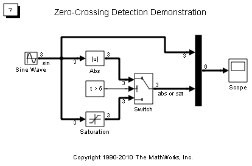
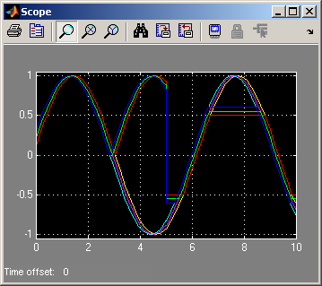

正確なゼロクロッシング検出
このデモでは、Simulink® でのゼロクロッシングの仕組みを示します。 このモデルでは、3 つのシフトした正弦波が Absolute Value ブロックと Saturationブロックに与えられます。 ちょうど t = 5 で、Switchブロックの出力は Absolute Value ブロックから Saturationブロックに変わります。 Simulink では、Switch ブロックの出力が変わる厳密なタイミングがゼロクロッシングによって自動的に検出され、ソルバーは、イベントが起こる厳密な時間に進みます。 このことは、スコープで出力を調べるとわかります。
 